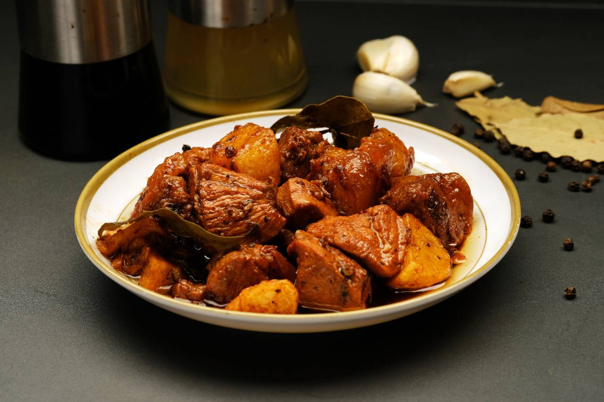

(Chicken) Adobo Recipe

A beloved Filipino classic, Adobo is a savory and tangy
dish made by simmering meat, usually chicken or pork, in a marinade of
soy sauce, vinegar, garlic, and black pepper. This slow-cooked stew
absorbs rich flavors, creating a tender and flavorful dish with a
perfect balance of salty, sour, and umami notes. Often served with
steamed rice, adobo is a comforting meal with a unique, bold taste that
has earned it a place in Filipino culinary tradition.
Serves: 6 to 8 people
Prep Time: 15 minutes
Cook Time: 1 hour and 30 minutes
Ingredients:
- 4 lbs of Chicken (bone in and skin on)
- 1 cup of soy sauce
- ½ cup of vinegar
- 6 to 10 garlic gloves (minced)
- 1 yellow onion (sliced)
-
3 to 4 potatoes (chopped and the amount may depend on your preference)
- 1 tablespoon of whole black peppercorns
- 3 bay leaves
-
2 tablespoon of neutral oil (whatever you and your family prefers)
- 1 to 2 cups of water (depends on your preference of taste)
Instructions:
-
Marinate the chicken
In a large bowl, put the chicken pieces with soy sauce, vinegar, and
half of the minced garlic. Marinate for at least 30 minutes or up to 1
day in the refrigerator, turning occasionally to ensure even flavor.
-
Prepare the pan
In a pan or deep skillet, heat 2 tablespoons of neutral oil over
medium-high heat. Add the remaining garlic and sliced onions, sautéing
until fragrant and the onions become translucent.
-
Brown the chicken
Add the marinated chicken pieces to pot, reserving the marinade. Brown
the chicken on each side for about 2-3 minutes until they develop a
nice golden color.
-
Simmer with Marinade and Spices
Pour the reserved marinade over the chicken. Add the whole black
peppercorns, bay leaves, and 1 to 2 cups of water, depending on your
desired flavor intensity and sauce consistency. Stir to combine.
-
Add the potatoes
Add the chopped potatoes to the pot, making sure they're submerged in
the sauce. Bring the mixture to a boil, then lower the heat to simmer.
Cover and cook for 30-40 minutes, or until the chicken is tender and
cooked through and the potatoes are soft.
-
Adjust Seasoning
Taste the sauce and adjust the seasoning if needed by adding a bit
more soy sauce or vinegar to achieve your preferred balance of salty
and tangy flavors.
-
Serve
Serve the chicken adobo with steamed rice, and garnish with extra
sauce from the pot. Enjoy the rich, savory flavors of this Filipino
classic!